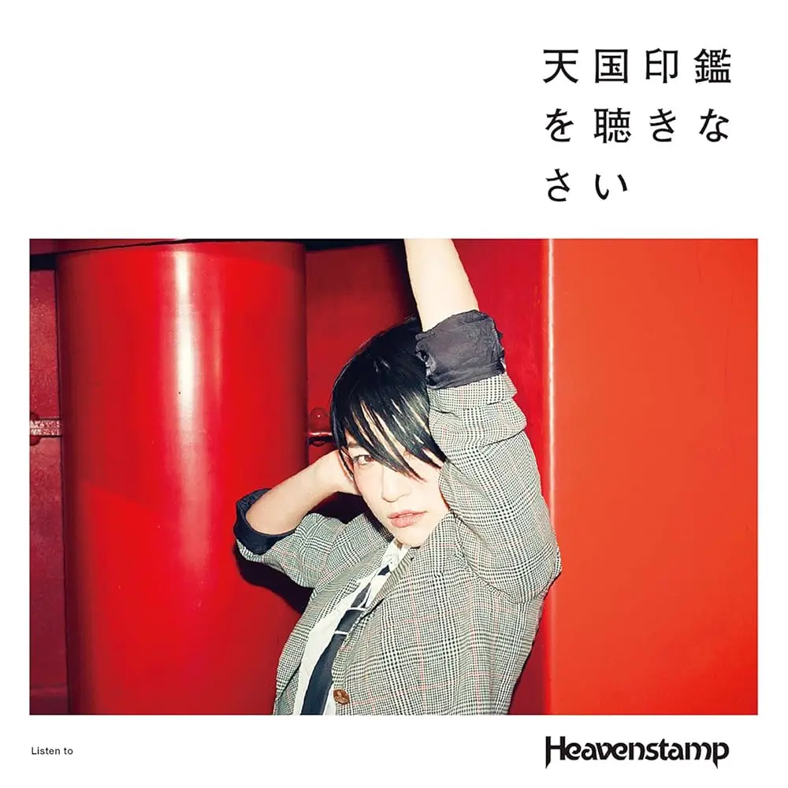
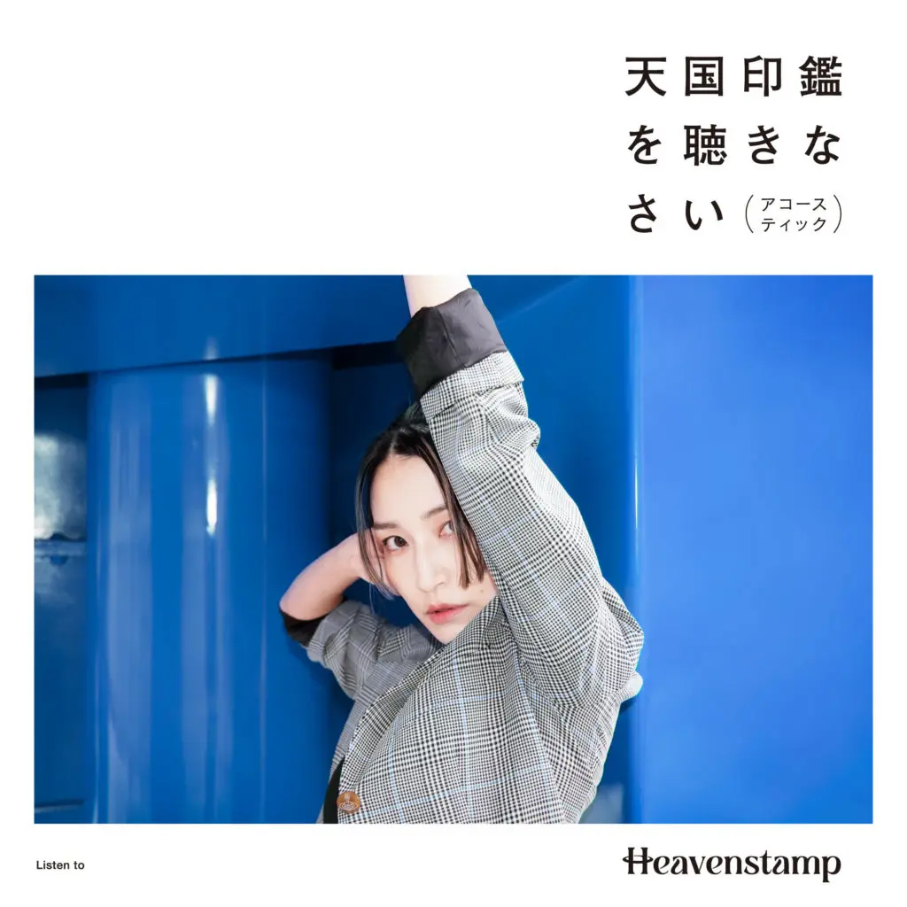

Album#18
天国印鑑を聴きなさい
{kind=link}

专辑信息
- 专辑名称：天国印鑑を聴きなさい
- 歌手：Heavenstamp (ヘブンスタンプ)
- 年份：2017-05-10 (2024-05-23 重制)
- 风格：摇滚、流行
- 时长：约 40 分钟

《天国印鑑を聴きなさい》直译过来是「倾听天国印鑑」，「天国印鑑」其实就是乐队的名字「Heavenstamp」，所以意思就是「快来听 Heavenstamp 的歌吧」。
2025 年乐队还出了一个 acoustic 的版本，即不插电的版本，相比摇滚的版本会更突出人声，编曲也不一样。
摇滚版本是红色封面，主唱 Sally 给我的感觉很飒，红色也给人一种热烈、活力、躁动的感觉。 acoustic 版本是蓝色封面，此时的 Sally 看起来更成熟，蓝色给人一种沉静的感觉。封面我会更喜欢红色的那版，歌的话两张专辑我都喜欢。
{kind=link}

乐队的主要成员是：
- Sally#Cinnamon，主唱、吉他手、贝斯手，并主要负责作词。（喜欢 Sally 的声音）
- Tomoya.S，吉他手、和声，并主要负责作曲。
乐队还有一个 主页。
除了这张专辑，也推荐听听他们其他歌，例如 Morning glow，我也蛮喜欢。
《愛を込めて、ウェンディ》
パパが眠る頃 1
12時の向こう
2階の窓をノックして
連れ出してよ パジャマのまま
あくびをしながら
テレビにさよなら
眠気ざましのコーヒーも
とうに冷めて うつらうつら
真っ赤なウソ100回吐けば行けるネバーランド
せっかくならあなたが守ってくれればな
開いた口に棚からこっそりビスケットを
欲しがってる いつだって 足りないの
安心させてベイビー
だれもかれも幸せになれるユメの国
あれもこれも手に入れたいのよ貪欲に
キラキラのおめめふたつ、わたしお姫様
飛んできて 抱き上げて ピーターパン!
愛を込めて、ウェンディ
小雪が降るのを
見るのも飽きたわ
仕舞い損ねたクリスマスツリーのような
わたしは憐れかしら?
真っ赤なウソ100回吐けば行けるネバーランド
せっかくならあなたが守ってくれればな
開いた口に棚からこっそりビスケットを
欲しがってる いつだって 足りないの
安心させてベイビー
だれもかれも幸せになれるユメの国
あれもこれも手に入れたいのよ貪欲に
キラキラのおめめふたつ、わたしお姫様
飛んできて 抱き上げて ピーターパン!
愛を込めて、ウェンディ
真っ赤なウソ100回吐けば行けるネバーランド
せっかくならあなたが守ってくれればな
開いた口に棚からこっそりビスケットを
欲しがってる いつだって 足りないの
安心させてベイビー
だれもかれも幸せになれるユメの国
あれもこれも手に入れたいのよ貪欲に
キラキラのおめめふたつ、わたしお姫様
飛んできて 抱き上げて ピーターパン!
愛を込めて、ウェンディ
喜欢歌的旋律和 Sally 的演唱。
这首歌大概是以《彼得潘》的故事作为原型的，有一种对梦幻和爱的强烈渴望。歌里能听到一些摇铃的声音，看 MV 发现摇铃是绑在脚上的，Sally 通过拍脚演奏，酷。
acoustic 版的吉他以及和声好听，中间还有一段吉他扫弦的演奏。
《Plastic Boy Plastic Girl》
使い捨てで溢れてる世界 2
見上げればいつでも Cloudy sky
求めてる僕たちの正解
壊れたら新しく交換
今までの成績はノーカウント？
馬鹿げてる できないよ共感
いざ踊れ Plastic boys
歌え Plastic girls
涙拭けば
また 廻る Plastic world
期待しなけりゃハッピー
ときめきが薄れてローテンション
時々は恐れず Objection
探してるつもりさ桃源郷
いざ踊れ Plastic boys
歌え Plastic girls
涙拭けば
また 廻る Plastic world
期待しなけりゃハッピー
いざ踊れ Plastic boys
歌え Plastic girls
涙拭けば
また 廻る Plastic world
期待しなけりゃハッピー
一上来就是很激烈的电吉他弹奏，然后是 Sally 的演唱，有种透过扩音器唱的感觉，副歌的旋律好听，听起来很有力量。
acoustic 的吉他演奏好听，这个版本里 Sally 的声音，会让我想到 aLIEz 中 mizuki 的声音，听着有点像。
《夏の抜け殻》
台風よ来るんだったら 3
雲の上まで連れ去ってよ
だんだんと擦り減った身体
夏の抜け壳だよ
商店街のお祭り
気付いたら終わってたな
後悔は嫌いなくせに
間違いばっか繰り返すの
君に奪われた
心はまだ、からっぽでも
簡単に埋まるような
それなりな愛じゃない
初めて手にした
痛いほどの自由がいま
サイレンの音に混じって
あたしを呼んでる
青春が沈んでいく
何者でもないあたし残して
人生の夕暮れみたいな
世界の果てはここなんだろう
夢に憧れた
本当はまだ揺れてるの
自分のために泣くのは
これで最後にしよう
風を吸い込んで
涙ごと吐きだしたら
空洞を抱えたままで
あたしは生きていく
君に奪われた
心はまだ、からっぽでも
簡単に埋まるような
それなりな愛じゃない
初めて手にした
痛いほどの自由がいま
サイレンの音に混じって
あたしを呼んでる
喜欢旋律、歌词、编曲，喜欢吉他和鼓的演奏。
歌词讲述的大概是在夏天里失恋了吧，被夺走了心的身体，就像是夏日留下的蜕壳。空洞难以填补，但也要「空洞を抱えたままで あたしは生きていく」（怀揣着这份空洞 我也要继续活下去）。
原版的是一种受伤后刺痛的感觉，而 acoustic 伴着温和的钢琴声，则有种释怀的感觉。
不知道为啥，acoustic 版本会让我想到 Orangestar 的歌，例如《或るひと夏の追憶》、《花と記憶》、《水星》、《回る空うさぎ》，或许是给我的感觉比较相近。
《カフェモカ(Latifa)》
夢から戻れば4
にじんだアイラインはそのまま
ガラスのハイヒールは
ひと晩踊っただけで ひび割れた
ありきたりな
恋でもよかった
深く沈んで 息もできない
ずるいあなたと まぬけなあたし
誰も知らぬ間に はじけたマボロシ
泣くわけないよ おとななんだから
羊を数えたら眠れる
なんてうそね 出かけよう
並木道のいつものお店
「ごきげんいかが？ 今日もカフェモカ？」
眩しいくらいの 彼女の笑顔
太陽みたいに この街を照らす
やさしい声に ぼやけた景色
甘いだけの
恋じゃなかった
苦さの向こうに なにがあるのかな
ドアを開けたら
ずっと好きだった
あなたのことをキライになって
独り歩く 木枯らしの朝
一首关于失恋的歌曲。
歌曲一开始是一段电吉他，MV 里的 Sally 坐在中华料理屋里，似乎在想着什么； 当钢琴响起，她喝完杯子里剩下的摩卡，起身离开，独自行走（「独り歩く 木枯らしの朝」），一路上或许在回忆着什么；在最后似乎做出了某个决定，给对方打了个电话，结束了一切，然后继续向前。
如果原版是快步走的话，acoustic 大概是走走停停吧，喜欢 acoustic 的钢琴、窸窸窣窣的鼓点和口琴（？）。
《頬を染めたり》
頬を染めたり 胸を焦がしたり 5
何でもない日々が地球を回してる
息吹吹き込んでる
分かれ道どこに向かったっていいさ
家で抱えて眠る 胸のチクチク
誰にも言えずに 新しい歌が増えていく
飲めないお酒か苦手なコーヒーか
選べずコンビニを出て
夜明けの渋谷で始発を待ってたら
帰り道、照らす陽が昇ってきた！
通り過ぎていった記憶も
追いつけないままの未来も
明日の為の経験値
レベルアップの鐘が聴こえる
頬を染めたり 胸を焦がしたり
何でもない日々が地球を回してる
息吹吹き込んでる
分かれ道どこに向かったっていいさ
Yeah！
一上来就能量满满的一首歌，旋律好听！有种觉得一切都很好、充满憧憬的感觉。
acoustic 版的和声和吉他也不错。
《Dr. Moonlight》
5月の夜はまだ肌寒くて 6
薄着のまま飛び出して後悔
だいぶ前にやめた煙草にさえ
すがりたいコンビニ前うろうろ
ハロー！どうも、お月様
泣いていいのかな
泣き方忘れたな
2人の距離はふいに離れて
衛星のようあの人と交われない
私の言葉は宇宙遊泳
浮かんではどこにもたどり着けない
ハロー！見ていてお月様
生まれ変われるわ
いざよう人生はイヤ
どうか明日もお月様
私を癒してね
Dr. Moonlight
空を覆う雲の精よ
邪魔しないでね
晴れないのは私のせいよ
ずっと照らしていた
愛しのMoonlight
ハロー！どうも、お月様
変わらず優しいなぁ
浄化していくパワー
ハロー！見ていてお月様
生まれ変われるわ
いざよう人生はイヤ
どうか明日もお月様
私を癒してね
Dr. Moonlight
Moonlight
Moonlight…
开头的鼓和吉他就蛮好听的，还能听到一些摇铃的声音。歌词也喜欢。
どうか明日もお月様
私を癒してね
明天也拜托了 月亮小姐
请将我治愈吧
acoustic 多了一些清脆的打击乐，Tomoya 的和声好听。
《Around the World》
僕ら今繰り返す瞬き 7
いつの日か海を越え羽ばたき
君の街へ Go around the world
過ぎた日々を振り返ることなく
流す涙が乾くよりも早く
君の手をとって Sing a song
僕らはもう知ってしまった
胸の鼓動には限りがあること
怖くないだなんて No No No 思えないけど
震えるほど美しい景色や
飛び上がるほど美味しいお料理も
まだ見ぬものに もっともっともっと出会っていきたい
神様さえ呆れてしまうかもしれない
でも
音に乗っかって迷わず飛ぶんだ
wo~o~o~o~ 这段，很适合在 live 合唱呢，好听，Sally 的歌声很有穿透力。
acoustic 的和声不错，偶尔乐器声减少，只保留 Sally 的人声，也好听。
☞ MV
《Monday Morning》
彼女と過ごした 8
いつかの日々を思い出す
二日酔いの朝で
いつもの月曜が始まる
どんなに波を止めようとしても
どんなに時間を戻そうとしても
どんなにもう一度会いたくなっても
永遠に叶わないこともあるだろう
4番線のホームで
ギリギリで涙隠した
メトロに乗り換えたあの子は
遠くへと運ばれていく
どんなに桜散るを嘆いても
どんなに虹を掴もうとしても
どんなに笑った顔が見たくても
永遠に叶わないこともあるだろう
どんなに波を止めようとしても
どんなに時間を戻そうとしても
人生がさよならばかりだとしても
僕は改札を出て歩いていく
旋律里能听到一些叮叮当的声音，像是节拍器。这首是主唱换成了 Tomoya，也喜欢。
失恋后很难过，但无论如何也无法回到从前，只好迈步向前。
acoustic 加入了口风琴，相比原版，感情上平淡些，虽然还是很无奈，但没那么「痛」了。
《ダークサイドへおいでよ》
"スマホよりも重たい気持ちはちょっとイタい 9
面倒は御免なんだ"
液晶の向こう側のアンタのズルさなんて透けて見えてる
仔犬のフリをしてさ あっという間に犠牲者
まんまと腹ん中
誠実色のフェイクファー 上手に着込んだハンター
本当は気付いてた
もっと汚れなよ もっと戻れないほど
もっとあたしだけに裏の顔見せてよ
もっと溺れなよ 酔って踏み外せよ
最初で最後で最低の共犯者
ダークサイドへおいでよ
アンタとあたしのような出会いに意味はない
そこら中 転がってる
マンガ並に綺麗な 好きだのなんだの
現実には落ちてない
いっそ認めなよ いっそ腹くくったら
ちっちゃい器ごと愛していられたのに
全部わかってたよ どうせ寂しいだけ
アンタのためになんて
もったいなくて泣けない
駄目なとこばっか 妙にいとしかったが
馬鹿なあたしもいい加減 目が覚めた
鼻白んでグッバイ 颯爽と煙を吐く
電話切ったなら どっかの女と
薄っぺらい恋でもしてな
いっそ認めなよ いっそ腹くくったら
ちっちゃい器ごと愛していられたのに
全部わかってたよ どうせ寂しいだけ
アンタのためになんて
もったいなくて泣けない
もっと汚れなよ もっと戻れないほど
きっと あたしのこと忘れていくんだろ
もっと溺れなよ 酔って踏み外せよ
最初で最後で最低の共犯者
ダークサイドへおいでよ
循环的吉他旋律还蛮好听的，歌词也不错，副歌 Sally 唱的很有力量。
acoustic 听着有些平淡，没有原版那种力量感，还是原版和歌词更搭。
《春の嵐》
溶けていく 溶けていく10
心の雪がほら
満ちていく 満ちていく
枯れていた希望の河
飛んでいく 飛んでいく
鈍色の雲がほら
晴れていく 晴れていく
不安をたずさえた霧が
消えない痛みを抱えて眠った
春を夢見たまま
出会いと別れ繰り返し迷って
君に導かれる
咲いていく 咲いていく
眩しいくらいの未来がほら
駆けてゆく 駆けてゆく
けもの道つまずきながら
副歌的鼓点不错，这首有点 盯鞋 的感觉。
春风吹来，化掉了心中的积雪，在这充满希望的季节里，哪怕跌跌撞撞，还是跑起来吧。
acoustic 的编曲也蛮好听的，但要选的话，我会更喜欢原版。
脚注:
父亲的沉睡之时
午夜 12 时的彼方
轻轻叩响二楼的窗户
将我带走吧 身着睡衣的我
一边打着哈欠
向电视机告别
解困醒神的咖啡也
早已变凉 昏昏欲睡
吐露 100 次彻头彻尾的谎言便能抵达的梦幻岛
既已如此 你能保护我就好了
微张的双唇凝视着架上的饼干
悄悄渴望 无论何时 无法满足
让我安心吧宝贝
无论谁都能变得幸福的「梦」之国度
这也想要那也想要尽数攫取 因那贪欲
闪闪发亮的幼稚双眸 我是公主殿下
向我飞来吧 将我抱起吧
Peter Pan！
倾注爱意吧 Wendy
小雪飘落的光景
已经看的厌倦了
如同被遗忘搁置的圣诞树的我
是否惹人怜惜呢
吐露 100 次彻头彻尾的谎言便能抵达的梦幻岛
既已如此 你能保护我就好了
微张的双唇凝视着架上的饼干
悄悄渴望 无论何时 无法满足
让我安心吧宝贝
无论谁都能变得幸福的「梦」之国度
这也想要那也想要尽数攫取 因那贪欲
闪闪发亮的幼稚双眸 我是公主殿下
向我飞来吧 将我抱起吧
Peter Pan！
倾注爱意吧 Wendy
吐露 100 次彻头彻尾的谎言便能抵达的梦幻岛
既已如此 你能保护我就好了
微张的双唇凝视着架上的饼干
悄悄渴望 无论何时 无法满足
让我安心吧宝贝
无论谁都能变得幸福的「梦」之国度
这也想要那也想要尽数攫取 因那贪欲
闪闪发亮的幼稚双眸 我是公主殿下
向我飞来吧 将我抱起吧
Peter Pan！
倾注爱意吧 Wendy
在一次性用品泛滥的世界
抬头看到的尽是乌云密布
我们在寻找正确的答案
东西坏了就换新的？
以往的积淀难道都要清零？
简直荒谬，无法产生共鸣
尽情舞动吧，塑料男孩
放声歌唱吧，塑料女孩
拭去泪水
塑料世界仍在周而复始
只要不抱期待，就能获得快乐
心动渐消，情绪低迷
偶尔也要敢于发出异议
始终在寻觅那片世外桃源
尽情舞动吧，塑料男孩
放声歌唱吧，塑料女孩
拭去泪水
塑料世界仍在周而复始
只要不抱期待，就能获得快乐
尽情舞动吧，塑料男孩
放声歌唱吧，塑料女孩
拭去泪水
塑料世界仍在周而复始
只要不抱期待，就能获得快乐
台风啊，若要来临的话
就将我带往云端之上吧
日渐磨损消耗的身体
不过是夏日留下的蜕壳
商店街的祭典
回过神时已经结束了啊
明明最讨厌后悔
却总是重复着同样的错误
被你夺走的
那颗心即便仍空虚无物
也不是那种可以轻易填补的
随处可见的爱意
初次到手的
这份近乎刺痛的自由
此刻正伴随着鸣笛声
呼唤着我的名字
青春不断沉没
只留下庸碌无为的我
如同人生的黄昏一般
世界的尽头大概就是这里了吧
在那憧憬着的梦境里
其实现在的我仍在动摇
最后一次
为了自己而哭泣吧
深吸一口狂风
连同泪水一起吐出
即便怀揣着这份空洞
我也要继续活下去
被你夺走的
那颗心即便仍空虚无物
也不是那种可以轻易填补的
随处可见的爱意
初次到手的
这份近乎刺痛的自由
此刻正交织在鸣笛声中
呼唤着我
从梦中醒来时
晕开的眼线依旧
那双玻璃高跟鞋
只跳了一晚的舞，便已满是裂痕
哪怕只是
一段平凡的爱也好
深陷其中，窒息难平
狡黠的你与愚笨的我
在无人知晓间，幻影幻灭
我才不会哭呢，毕竟已经是大人了
说什么数着绵羊就能入睡
全是谎话，还是出门吧
去往林荫道上那家常去的店
「您好呀，
今天也是咖啡摩卡吗？」
她那近乎耀眼的笑容
像太阳一样照亮了这座城市
在温柔的嗓音中，景色逐渐模糊
这并非一段
只有甜蜜的爱
在苦涩的尽头，究竟在那儿等着什么呢
推开门扉
将一直深爱着的你
彻底从心中厌弃
独自走在寒风凛冽的清晨
脸颊染上绯红 此时心中焦灼
平凡无奇的日常 推动着地球旋转
注入万物生息
分岔路口 无论走向何方都好
独自在家中拥抱入眠 心中的阵阵刺痛
无法向他人倾诉 新编织的歌谣与日俱增
是喝不了的酒 还是苦涩的咖啡
无法抉择 索性走出了便利店
在黎明的涩谷 等待着首班电车
在归途之中 照亮前方的旭日已然升起！
那些随风而逝的记忆
还有尚且无法追赶的未来
都是为了明天而积累的经验值
我听见了等级提升的钟声
脸颊染上绯红 此时心中焦灼
平凡无奇的日常 推动着地球旋转
注入万物生息
分岔路口 无论走向何方都好
Yeah!
五月的夜仍旧寒冷
让我后悔穿着薄薄衣裳出门
即便很久前就戒掉了香烟
却还是习惯在便利店前徘徊
Hello！谢谢你，月亮小姐
可以哭出来吗
可我已经忘了如何哭泣
突然间两人的距离就拉远了
我像是一颗卫星 无法与那个人交汇
我的话语像是在太空中游荡
浮现之后却哪里也无法抵达
Hello！看着我吧，月亮小姐
我会重获新生的
我讨厌这犹豫不决的人生
明天也拜托了 月亮小姐
请将我治愈吧
Dr. Moonlight
遮盖天空的云之精灵啊
请不要打扰
无法放晴是我的错
请一直照耀着吧
深爱的 Moonlight
Hello！多谢了，月亮小姐
你还是那么温柔呢
那股净化人心的力量
Hello！看着我吧，月亮小姐
我会重获新生的
我讨厌这犹豫不决的人生
明天也拜托了 月亮小姐
请将我治愈吧
Dr. Moonlight
Moonlight
Moonlight…
此刻 我们反复眨眼
终有一日 能够跨越大海 展翅高飞
去向你的城市 环游世界
不去回望已逝的日子
在落下的泪水干涸之前
紧握住你的手 唱首歌
我们已然知晓
心脏的跳动是有界限的
不害怕什么的 no no no 我并不觉得
美丽得让人心颤的景色也好
美味得让人雀跃的料理也好
未曾见识过的一切 想更多 更多 更多地去遇见
或许就连神明也都目瞪口呆
但是
乘着声音 毫不犹豫地飞吧
与女友度过的
往昔岁月浮现在脑海
宿醉氤氲的清晨
周一又一如往常地开始了
无论有多么想要抵御浪潮的来袭
无论有多么想要时光能够倒流
无论有多么想要再见到一次你
有的事情也终究是永远无法实现的吧
在 4 号线的站台
竭尽全力地强忍泪水
换乘了地下铁的那个人
被轨道带往了远方
无论如何为樱花飘落而叹息
无论如何想要抓住天边虹色
无论如何想要看见你露出笑容的脸
有的心愿也终究是永远无法顺遂的吧
不管有多么想要平复翻涌的情感
无论有多么想要回溯到往昔岁月
即使人生充斥着无数的告别与分离
我会走出检票口 迈步向前
「比智能手机更沉重的心情，实在难堪
我可不想麻烦」
你隐藏在屏幕彼端的狡猾，我看得清清楚楚
装作天真小狗，转眼就制造牺牲者
被你玩弄于股掌之间
披着诚实伪装的猎人
其实我早就看穿了
再堕落些吧，直到无法回头
只向我展现你阴暗的面孔
再沉溺些吧，趁醉意失足坠落
做彼此最初最后、最差劲的共犯
坠入暗面来吧
像你我这样的相遇，其实毫无意义
遍地都是廉价邂逅
像漫画般华丽的「我喜欢你」之类的话语
在现实里根本不存在
干脆承认吧，彻底下定决心的话
连你狭隘的心胸我都能去爱
我全都明白啊，反正只是寂寞而已
「为了你…」这种话
虚伪得连眼泪都吝啬
那些坏到不行的地方，反而让我觉得可爱
但愚蠢的我也该清醒了
嗤笑着道别，潇洒地吐出烟圈
如果你挂断电话，就去找别的女人
来一场肤浅的恋爱吧
干脆承认吧，彻底下定决心的话
连你狭隘的心胸我都能去爱
我全都明白啊，反正只是寂寞而已
「为了你…」这种话
虚伪得连眼泪都吝啬
再堕落些吧，直到无法回头
反正你终将把我遗忘
再沉溺些吧，趁醉意失足坠落
做彼此最初最后、最差劲的共犯
坠入暗面来吧
融化吧 融化吧
看啊 心中的雪
满溢吧 满溢吧
干涸的希望之河
飞散吧 飞散吧
看啊 灰暗的云
晴朗吧 晴朗吧
满载不安的雾
怀抱着永不消散的伤痛入眠
却依然梦见春天
在相遇与别离的反复中迷惘
被你指引着方向
绽放吧 绽放吧
看啊 那耀眼的未来
奔跑吧 奔跑吧
哪怕在野兽小径上跌跌撞撞